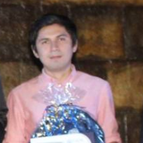

Said Dawn
Administrador de tecnologías de Información con gusto por la programación en Mérida, Yuc. Mex.
Making Impacts on Individuals and Organizations using Information Technology.
Experiencia
- BitWit Informática
- Utopia Software
- Desarrollador Software en Tiendas CHAPUR ( 2018 ~ 02 / 2019 ~ )
- Full Stack Web Developer Odontalify CRM ( 2019 ~ 05 / 2019 ~ )
Logros personales/grupales
- EGEL Informática (Sobresaliente)
- 2° mejor promedio generación 2015 ~ 2019 Lic. Administración Técnologías Información
- 1° lugar por equipos 50° Juegos Deportivos Universitarios Ajedrez (08/09/2019) 1 2 3
- Reconocimiento Orgullo FCA UADY( 2018 )
- Primer lugar maratón conocimientos informática administrativa Nacional ANFECA Mty. NL. ( 2018 )
- Primer lugar maratón conocimientos informática administrativa Regional ANFECA. Q.Roo ( 2018 )
- (5) Primer lugar por categoría olimpiadas estatales Ajedrez (Quintana Roo)
Educación
- Lic. Administración de Tecnologías de Información en Facultad de Contaduría y Administración. ( 2014 )
- Lic. Ciencias de la Computación en Facultad de Matemáticas. ( 2009)
Proyectos
- Odontalify CRM
- Descarga Masiva CFDI
- Calculadora CETES
Intereses
- Ajedrez
- Finanzas Personales / Inversiones
{kind=link}
{kind=link}
{kind=link}